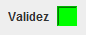

Existen tres modos para validar el código: en el menú superior, presionando el botón "Validar" (Sin las comillas) o pisando el botón "Aceptar" (Sin las comillas).
Los dos primeros casos son equivalentes, realiza una validación del código sin cerrar la ventana. La tercera opción, cierra la ventana una vez realizado la validación.
Si el código es valido el recuadro que se encuentra al lado de la palabra validez se colocara de color verde, como se muestra en la imagen:
